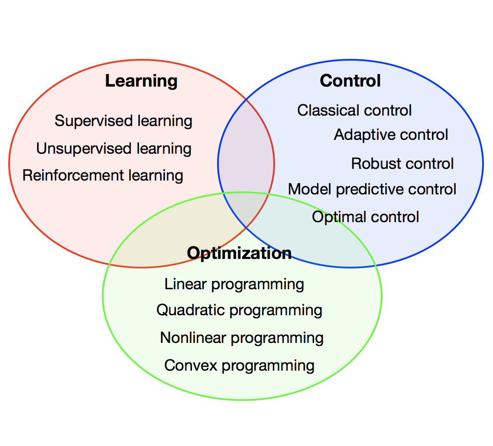
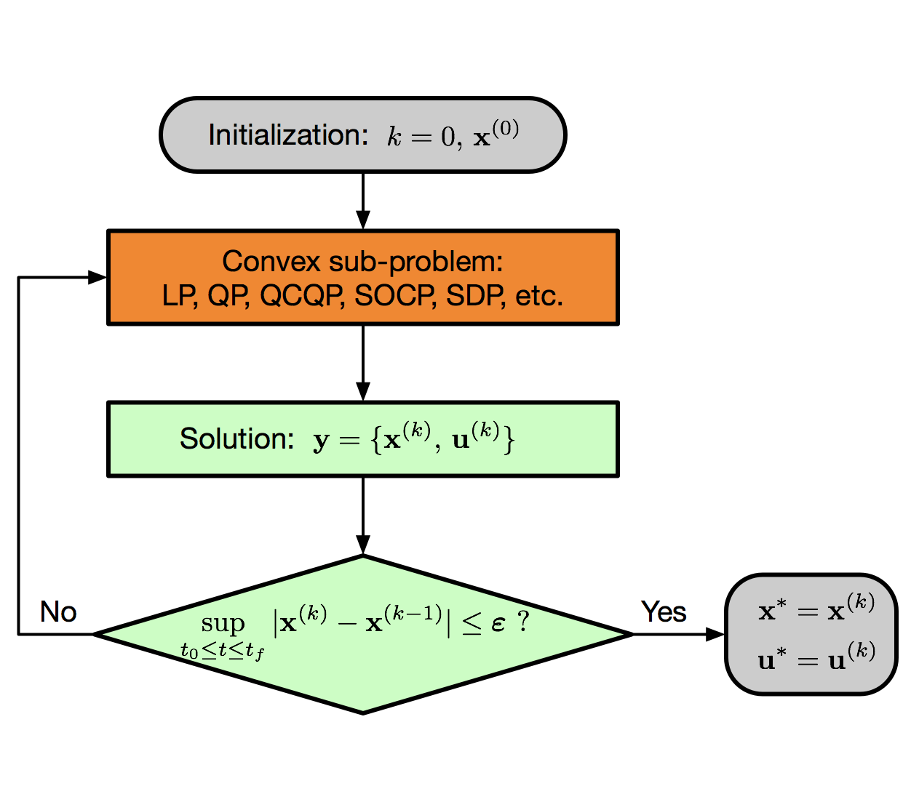
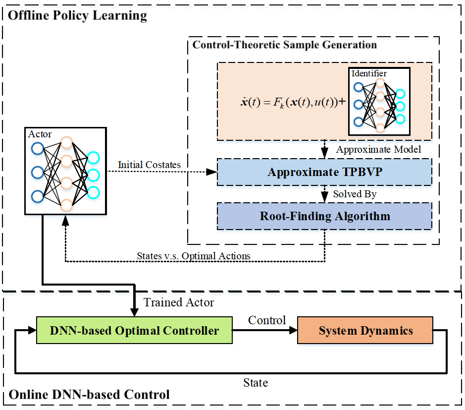

Research Overview
Our research focuses on advancing control, optimization, and learning-based methods for complex engineering systems. We are particularly interested in two overarching challenges: real-time numerical algorithms and highly efficient solution processes.
Modern autonomous systems must operate in dynamic, uncertain environments while responding to evolving mission requirements in real time. At the same time, these systems must execute complex tasks involving highly nonlinear dynamics and stringent constraints, demanding both accuracy and robustness in decision-making. Addressing these challenges requires computational methods that are not only fast, but also reliable and scalable.
To this end, we develop convexification and successive convex programming (SCP) frameworks for guidance, control, and decision-making problems. By leveraging the structure of convex optimization and the efficiency of interior-point methods, our approaches enable the solution of complex optimal control problems in real time. These methods are particularly well-suited for onboard implementation, where computational resources are limited but fast, dependable performance is critical. As computational capabilities continue to advance, convex-optimization-based approaches are poised to become a foundational component of autonomous system operation. Our current efforts emphasize improving the computational efficiency, robustness, and reliability of these solution methods to enable broader deployment across diverse applications.
In parallel, we explore the integration of artificial intelligence and machine learning into real-time control and optimization. Recent advances in solving the Hamilton–Jacobi–Bellman equations, two-point boundary value problems, and highly complex numnerical optimization problems have demonstrated the potential of deep learning and reinforcement learning for real-time optimal control of nonlinear dynamical systems under both deterministic and uncertain conditions. These emerging, data-driven approaches offer several key advantages: they reduce computational burden, mitigate risks of solution failure, improve adaptability to large-scale and high-dimensional data, and enable faster and more stable convergence to optimal solutions. By combining model-based approaches with learning-based techniques, our research aims to develop next-generation frameworks for autonomous systems that are both efficient and resilient across a wide range of mission scenarios.
Currently, we are addressing the following applications:


